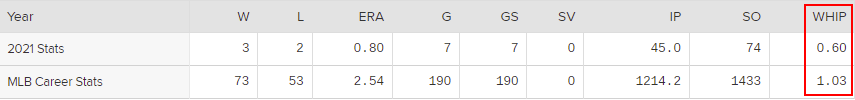
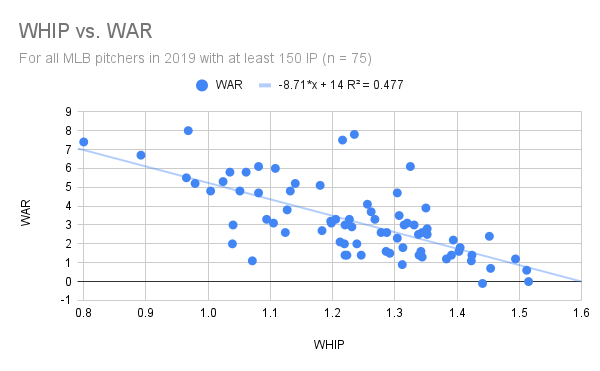
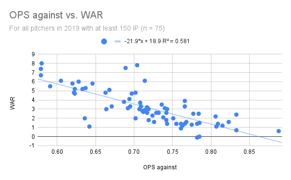

WHIP is Overrated
by A. Kline
Posted on 05/28/2021
If you go to any current pitcher’s page on Major League Baseball’s official site, you will be greeted not just by their photo, age, height, weight, and handedness, but some very basic stats as well. Win-loss record, ERA, innings pitched, all that. But you’ll also see their WHIP.
Jacob deGrom’s stats as seen on MLB.com as of May 26 of this year. And yes, that 3-2 record with an ERA of less than 1 is the most Jacob deGrom thing ever.
If you are in the camp of baseball fans who know enough about baseball to recognize most of what’s in the image above but not enough to dare approach any statistic that sounds like onomatopoeia, it may be a surprise to see such a strange-sounding stat effectively endorsed by the MLB itself. And if you’re anything like me, you’re also surprised to see WHIP promoted that highly by the league, but not for the same reason.
On some level, I genuinely do get why WHIP is as popular as it is. For starters, WHIP was not a name plucked out of thin air—it’s simply an acronym for Walks plus Hits per Innings Pitched. To make it even simpler, here is the formula for it:
WHIP = (Walks + Hits) / Innings Pitched
Yes, it really is that simple—and that’s a huge part of the appeal. With just three basic and easy-to-find counting stats, you can roughly calculate how effective any pitcher is at preventing hitters from reaching base. And given how reaching base is essential to scoring runs, you can therefore approximate how effective a pitcher should be at preventing runs—which is the job description for a pitcher when you really think about it. In this sense, it is like a more skill-based version of the more results-based (a.k.a. more luck based) ERA, an undisputed cornerstone of pitching statistics. As I referenced in my previous post, WHIP is a creation of Daniel Okrent and is often considered to be one of the hallmark sabermetric stats of its age, despite its simplicity. So if WHIP is so simple and so effective, then what’s the issue here?
Well, let’s return to what WHIP’s most fundamental goal is: assessing a pitcher’s skill at preventing hitters from reaching base. When I said that WHIP can be used to roughly calculate how effective pitchers do this, I did not use the word “roughly” by accident. While it is impossible to assess any player’s skill with 100% accuracy, saying that WHIP gets closer than any other elementary statistic would be disingenuous. In reality, the metric’s shortcomings can be summed up by its two most glaring issues.
WHIP’s first problem is that it does not factor in the number of batters a pitcher has hit. This is admittedly the smaller issue with the metric, but it’s not nothing. Using Baseball-Reference data, the league-wide WHIP from the 2016 season (as in all hits allowed plus all walks allowed divided by all innings pitched by any qualified pitcher) was 1.325. If that season’s 1651 hit batsmen were included in this calculation, however, this number would rise to 1.363. In a more specific case, if Chris Sale’s 17 hit batters from that year were included in his WHIP, it would rise from 1.037 (seventh-highest in the league that year) to 1.113—a difference even greater than that between Sale’s actual 1.037 WHIP and first-place Max Scherzer’s 0.968.
But focusing too much on the lack of hit batsmen in the WHIP formula detracts our attention from the stat’s biggest issue: the lack of discernment between different kinds of hits. For example, a pitcher who allows four home runs as many innings with no walks would have the same WHIP (1.000) as a pitcher who allowed only four singles. While proponents of defense-independent pitching stats may emphasize (perhaps too much) the role fielders play in inside-the-park hits, the fact that not all hits are created equal is indisputable, making it that much more surprising that one of the most popular sabermetric statistics would ignore it entirely. The idea of nuance in regards to hits is not even new, either—it is the exact idea of slugging percentage, which has been one of the most recognizable hitter stats for decades.
For the sake of my next example, let’s create an alternative to WHIP based on the weights of slugging percentage, as seen below:
Alternative WHIP = (1B + (2*2B) + (3*3B) + (4*HR) + BB) / IP
Using MLB.com and Baseball Savant data (as Baseball-Reference does not record doubles and triples for pitchers) Justin Verlander’s WHIP in 2019 was 0.803—best in the league by a significant margin and only about 60 percent of the league-wide value of 1.334—but his adjusted WHIP was 1.475, a less impressive 72 percent of the league-wide adjusted WHIP of 2.0349. That would be roughly the equivalent of a 0.960 WHIP in 2019, or about what Jack Flaherty pulled off. Obviously that’s still great, but at almost 0.2 higher than Verlander’s actual number, it’s the same difference between third-place Flaherty and seventeenth-place Mike Soroka.
Even though I used Alternative WHIP in this post, alternatives to WHIP certainly do exist. Let’s think, for a second, of what a good substitute for WHIP would be: some metric that assesses how effective a pitcher is at keeping hitters from reaching base while still factoring in both hit batsmen and different kinds of hits. We can find our substitute by looking at stats we use to evaluate hitters, such as OPS. By adding on-base percentage to slugging percentage, we can get an idea of how effective hitters are at reaching base without sacrificing the nuance in how they get there. Therefore, the OPS a pitcher allows should be more effective at measuring a pitcher’s fundamental skill than WHIP.
We can compare the effectiveness of WHIP and OPS allowed using Wins Above Replacement, or WAR. While WAR is by no means perfect (no stat is), its long and thorough calculation process ensures that it better measures a pitcher’s skill than both WHIP and OPS, making it a good metric to compare the two. To do this, I decided to look at 2019 pitching data, because that is the last year of “normal” data we have when you account for the shortened season last year and what could be the next 1968 this year.
=150 IP">(Data from Baseball-Reference.com)
As you can see above, there certainly is a relationship between Baseball-Reference WAR and WHIP for 2019’s most qualified pitchers. The R-squared value of 0.477 means that at least in this case, about half of a pitcher’s WAR can be predicted by their WHIP, which is not too shabby. How about OPS?
=150 IP">(Data from Baseball-Reference.com)
Well how about that? Even with a handful of outliers, the R-squared value improves significantly when WHIP is substituted with OPS against. Obviously this is not a causal relationship—a pitcher improving their OPS does not specifically cause their WAR to improve as well. But this relationship does show that accounting for factors like batters hit and extra base hits is important when assessing just how effective a pitcher is at preventing runs. Of course, OPS is not perfect either. Adding two fractions together, let alone ones with completely different denominators, is a pretty sketchy calculation that does not make much intuitive sense. But the fact that still seems more reflective of pitcher's skill despite this OPS really does say a lot about WHIP.
I should emphasize that WHIP is not some uniquely evil statistic that deserves to be shamed ad infinitum. If you want to know the rough number (you know, not counting hit batters and all that) of baserunners a pitcher allows per inning, then by all means, use it. But at its heart, WHIP is a fundamentally simple metric with major limitations as a result—so do not make it out to be more than it’s worth.